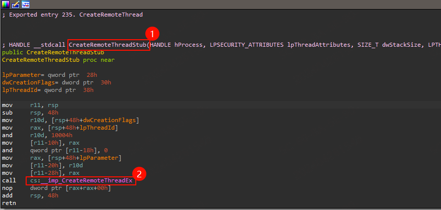
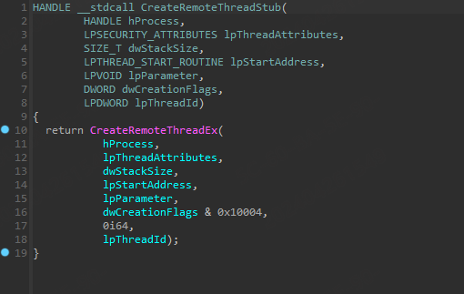
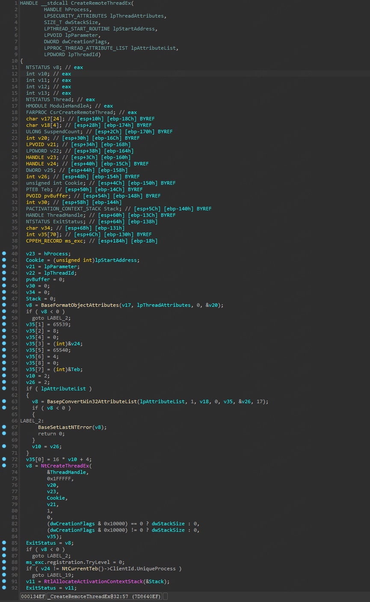
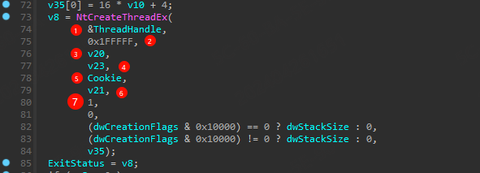
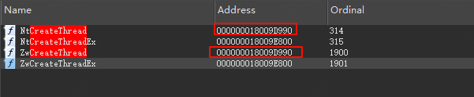
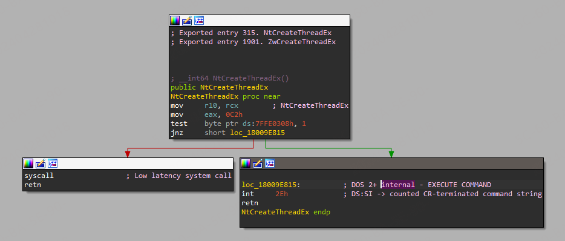
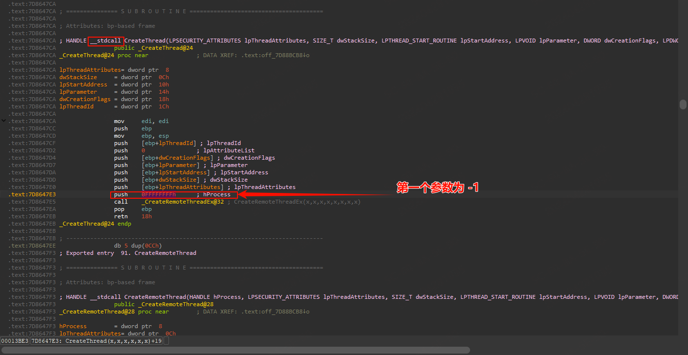

概述：
CreateRemoteThread的简单使用 Demo
在阅读之前，建议大家带着几个问题
- CreateRemoteThread 是如何实现的
- 自己实现需要哪几个主要的步骤
- 权限问题是如何验证的(这个问题涉及比较多，仅提出来供参考)
说明
打开一个 GUI 进程，并在进程中调用 MessageBox 弹出消息框。
关键说明：由于注入只能传递一个参数，因此不能直接在目标进程中调用
MessageBox. 因此至少需要创建一个只有一个入参的函数来传递MessageBox的相关调用。
步骤说明：
- 根据传递的进程名获取进程
PID - 根据
PID打开目标进程 - 申请内存写入调用函数的地址
- 申请内存写入调用函数的参数
- 创建远程线程调用写入的函数
代码
调用 CreateRemoteThread
#pragma once
#include <windows.h>
#include <TlHelp32.h>
#include "stdio.h"
//线程参数结构体定义
typedef struct _RemoteParam {
char szMsg[12]; //MessageBox 函数中显示的字符提示
DWORD dwMessageBox;//MessageBox 函数的入口地址
} RemoteParam, * PRemoteParam;
//定义 MessageBox 类型的函数指针
typedef int(__stdcall* PFN_MESSAGEBOX)(HWND, LPCTSTR, LPCTSTR, DWORD);
//线程函数定义
DWORD __stdcall threadProc(LPVOID lParam)
{
RemoteParam* pRP = (RemoteParam*)lParam;
PFN_MESSAGEBOX pfnMessageBox;
pfnMessageBox = (PFN_MESSAGEBOX)pRP->dwMessageBox;
pfnMessageBox(NULL, pRP->szMsg, pRP->szMsg, 0);
return 0;
}
//提升进程访问权限
bool enableDebugPriv()
{
HANDLE hToken;
LUID sedebugnameValue;
TOKEN_PRIVILEGES tkp;
if (!OpenProcessToken(GetCurrentProcess(),
TOKEN_ADJUST_PRIVILEGES | TOKEN_QUERY, &hToken)) {
return false;
}
if (!LookupPrivilegeValue(NULL, SE_DEBUG_NAME, &sedebugnameValue)) {
CloseHandle(hToken);
return false;
}
tkp.PrivilegeCount = 1;
tkp.Privileges[0].Luid = sedebugnameValue;
tkp.Privileges[0].Attributes = SE_PRIVILEGE_ENABLED;
if (!AdjustTokenPrivileges(hToken, FALSE, &tkp, sizeof(tkp), NULL, NULL)) {
CloseHandle(hToken);
return false;
}
return true;
}
//根据进程名称得到进程 ID, 如果有多个运行实例的话，返回第一个枚举到的进程的 ID
DWORD processNameToId(LPCTSTR lpszProcessName)
{
HANDLE hSnapshot = CreateToolhelp32Snapshot(TH32CS_SNAPPROCESS, 0);
PROCESSENTRY32 pe;
pe.dwSize = sizeof(PROCESSENTRY32);
if (!Process32First(hSnapshot, &pe)) {
MessageBox(NULL,
"The frist entry of the process list has not been copyied to the buffer",
"Notice", MB_ICONINFORMATION | MB_OK);
return 0;
}
while (Process32Next(hSnapshot, &pe)) {
if (!strcmp(lpszProcessName, pe.szExeFile)) {
return pe.th32ProcessID;
}
}
return 0;
}
int main(int argc, char* argv[])
{
//定义线程体的大小
const DWORD dwThreadSize = 4096;
DWORD dwWriteBytes;
//提升进程访问权限
enableDebugPriv();
char* szExeName = (char*)"calc.exe";
DWORD dwProcessId = processNameToId(szExeName);
if (dwProcessId == 0) {
MessageBox(NULL, "The target process have not been found !",
"Notice", MB_ICONINFORMATION | MB_OK);
return -1;
}
//根据进程 ID 得到进程句柄
HANDLE hTargetProcess = OpenProcess(PROCESS_ALL_ACCESS, FALSE, dwProcessId);
if (!hTargetProcess) {
MessageBox(NULL, "Open target process failed !",
"Notice", MB_ICONINFORMATION | MB_OK);
return 0;
}
//在宿主进程中为线程体开辟一块存储区域
//在这里需要注意 MEM_COMMIT | MEM_RESERVE 内存非配类型以及 PAGE_EXECUTE_READWRITE 内存保护类型
//其具体含义请参考 MSDN 中关于 VirtualAllocEx 函数的说明。
void* pRemoteThread = VirtualAllocEx(hTargetProcess, 0,
dwThreadSize, MEM_COMMIT | MEM_RESERVE, PAGE_EXECUTE_READWRITE);
if (!pRemoteThread) {
MessageBox(NULL, "Alloc memory in target process failed !",
"notice", MB_ICONINFORMATION | MB_OK);
return 0;
}
//将线程体拷贝到宿主进程中
if (!WriteProcessMemory(hTargetProcess,
pRemoteThread, &threadProc, dwThreadSize, 0)) {
MessageBox(NULL, "Write data to target process failed !",
"Notice", MB_ICONINFORMATION | MB_OK);
return 0;
}
//定义线程参数结构体变量
RemoteParam remoteData;
ZeroMemory(&remoteData, sizeof(RemoteParam));
//填充结构体变量中的成员
HINSTANCE hUser32 = LoadLibrary("User32.dll");
remoteData.dwMessageBox = (DWORD)GetProcAddress(hUser32, "MessageBoxA");
strcat_s(remoteData.szMsg, "Hello＼0");
//为线程参数在宿主进程中开辟存储区域
RemoteParam* pRemoteParam = (RemoteParam*)VirtualAllocEx(
hTargetProcess, 0, sizeof(RemoteParam), MEM_COMMIT, PAGE_READWRITE);
if (!pRemoteParam) {
MessageBox(NULL, "Alloc memory failed !",
"Notice", MB_ICONINFORMATION | MB_OK);
return 0;
}
//将线程参数拷贝到宿主进程地址空间中
if (!WriteProcessMemory(hTargetProcess,
pRemoteParam, &remoteData, sizeof(remoteData), 0)) {
MessageBox(NULL, "Write data to target process failed !",
"Notice", MB_ICONINFORMATION | MB_OK);
return 0;
}
//在宿主进程中创建线程
HANDLE hRemoteThread = CreateRemoteThread(
hTargetProcess, NULL, 0, (DWORD(__stdcall*)(void*))pRemoteThread,
pRemoteParam, 0, &dwWriteBytes);
if (!hRemoteThread) {
MessageBox(NULL, "Create remote thread failed !", "Notice", MB_ICONINFORMATION | MB_OK);
return 0;
}
CloseHandle(hRemoteThread);
FreeLibrary(hUser32);
return 0;
}调用 ZwCreateThreadEx
////////////////////////////////
//
// FileName : KernelFuncInject.cpp
// Creator : PeterZheng
// Date : 2019/01/10 21:32
// Comment : Use Kernel Function To Inject
//
////////////////////////////////
#pragma once
#include <cstdio>
#include <cstdlib>
#include <iostream>
#include <strsafe.h>
#include <Windows.h>
#include <TlHelp32.h>
#ifdef _WIN64
typedef DWORD(WINAPI *typedef_ZwCreateThreadEx)(
PHANDLE ThreadHandle,
ACCESS_MASK DesiredAccess,
LPVOID ObjectAttributes,
HANDLE ProcessHandle,
LPTHREAD_START_ROUTINE lpStartAddress,
LPVOID lpParameter,
ULONG CreateThreadFlags,
SIZE_T ZeroBits,
SIZE_T StackSize,
SIZE_T MaximumStackSize,
LPVOID pUnkown);
#else
typedef DWORD(WINAPI *typedef_ZwCreateThreadEx)(
PHANDLE ThreadHandle,
ACCESS_MASK DesiredAccess,
LPVOID ObjectAttributes,
HANDLE ProcessHandle,
LPTHREAD_START_ROUTINE lpStartAddress,
LPVOID lpParameter,
BOOL CreateSuspended,
DWORD dwStackSize,
DWORD dw1,
DWORD dw2,
LPVOID pUnkown);
#endif
using namespace std;
// 提权函数
BOOL EnableDebugPriv(LPCSTR name)
{
HANDLE hToken;
LUID luid;
TOKEN_PRIVILEGES tp;
// 打开进程令牌
if (!OpenProcessToken(GetCurrentProcess(), TOKEN_QUERY | TOKEN_ADJUST_PRIVILEGES, &hToken))
{
printf("[!]Get Process Token Error!\n");
return false;
}
// 获取权限 Luid
if (!LookupPrivilegeValue(NULL, name, &luid))
{
printf("[!]Get Privilege Error!\n");
return false;
}
tp.PrivilegeCount = 1;
tp.Privileges[0].Luid = luid;
tp.Privileges[0].Attributes = SE_PRIVILEGE_ENABLED;
// 修改进程权限
if (!AdjustTokenPrivileges(hToken, false, &tp, sizeof(TOKEN_PRIVILEGES), NULL, NULL))
{
printf("[!]Adjust Privilege Error!\n");
return false;
}
return true;
}
// 根据进程名字获取进程 Id
BOOL GetProcessIdByName(CHAR *szProcessName, DWORD& dwPid)
{
HANDLE hSnapProcess = ::CreateToolhelp32Snapshot(TH32CS_SNAPPROCESS, 0);
if (hSnapProcess == NULL)
{
printf("[*] Create Process Snap Error!\n");
return FALSE;
}
PROCESSENTRY32 pe32 = { 0 };
::RtlZeroMemory(&pe32, sizeof(pe32));
pe32.dwSize = sizeof(pe32);
BOOL bRet = ::Process32First(hSnapProcess, &pe32);
while (bRet)
{
if (_stricmp(pe32.szExeFile, szProcessName) == 0)
{
dwPid = pe32.th32ProcessID;
return TRUE;
}
bRet = ::Process32Next(hSnapProcess, &pe32);
}
return FALSE;
}
int main(int argc, char* argv[])
{
if (argc != 3)
{
printf("[*] Format Error! \nYou Should FOLLOW THIS FORMAT: <APCInject EXENAME DLLNAME> \n");
return 0;
}
LPSTR szExeName = (LPSTR)::VirtualAlloc(NULL, 100, MEM_COMMIT | MEM_RESERVE, PAGE_READWRITE);
LPSTR szDllPath = (LPSTR)::VirtualAlloc(NULL, 100, MEM_COMMIT | MEM_RESERVE, PAGE_READWRITE);
::RtlZeroMemory(szExeName, 100);
::RtlZeroMemory(szDllPath, 100);
::StringCchCopy(szExeName, 100, argv[1]);
::StringCchCopy(szDllPath, 100, argv[2]);
DWORD dwPid = 0;
// 系统进程必须先提权才能打开，否则在 OpenProcess 步骤会失败
EnableDebugPriv(SE_DEBUG_NAME);
BOOL bRet = GetProcessIdByName(szExeName, dwPid);
if (!bRet)
{
printf("[*] Get Process Id Error!\n");
return 0;
}
HANDLE hProcess = ::OpenProcess(PROCESS_ALL_ACCESS, FALSE, dwPid);
if (hProcess == NULL)
{
printf("[*] Open Process Error!\n");
return 0;
}
DWORD dwDllPathLen = strlen(szDllPath) + 1;
LPVOID lpBaseAddress = ::VirtualAllocEx(hProcess, NULL, dwDllPathLen, MEM_COMMIT | MEM_RESERVE, PAGE_READWRITE);
if (lpBaseAddress == NULL)
{
printf("[*] VirtualAllocEx Error!\n");
return 0;
}
SIZE_T dwWriten = 0;
// 把 DLL 路径字符串写入目标进程
::WriteProcessMemory(hProcess, lpBaseAddress, szDllPath, dwDllPathLen, &dwWriten);
if (dwWriten != dwDllPathLen)
{
printf("[*] Write Process Memory Error!\n");
return 0;
}
// 获取 LoadLibrary 函数地址
LPVOID pLoadLibraryFunc = ::GetProcAddress(::GetModuleHandle("kernel32.dll"), "LoadLibraryA");
if (pLoadLibraryFunc == NULL)
{
printf("[*] Get Func Address Error!\n");
return 0;
}
HMODULE hNtdll = ::LoadLibrary("ntdll.dll");
if (hNtdll == NULL)
{
printf("[*] Load NtDLL Error!\n");
return 0;
}
typedef_ZwCreateThreadEx ZwCreateThreadEx = (typedef_ZwCreateThreadEx)::GetProcAddress(hNtdll, "ZwCreateThreadEx");
if (ZwCreateThreadEx == NULL)
{
printf("[*] Get NTDLL Func Address Error!\n");
return 0;
}
DWORD dwStatus = 0;
HANDLE hRemoteThread = NULL;
dwStatus = ZwCreateThreadEx(&hRemoteThread, PROCESS_ALL_ACCESS, NULL, hProcess, (LPTHREAD_START_ROUTINE)pLoadLibraryFunc, lpBaseAddress, 0, 0, 0, 0, NULL);
if (hRemoteThread == NULL)
{
printf("[*] Create Remote Thread Error!\n");
return 0;
}
// DLL 路径分割，方便输出
LPCSTR szPathSign = "\\";
LPSTR p = NULL;
LPSTR next_token = NULL;
p = strtok_s(szDllPath, szPathSign, &next_token);
while (p)
{
StringCchCopy(szDllPath, 100, p);
p = strtok_s(NULL, szPathSign, &next_token);
}
printf("[*] High Privilege Inject Info [%s ==> %s] Success\n", szDllPath, szExeName);
::CloseHandle(hProcess);
::FreeLibrary(hNtdll);
::VirtualFree(szExeName, 0, MEM_RELEASE);
::VirtualFree(szDllPath, 0, MEM_RELEASE);
::ExitProcess(0);
return 0;
}ZwCreateThreadEx 分析
ZwCreateThreadEx 属于 native 函数，微软官方并没有给出相关文档，本小节分析内容参考本文引用文章。
NTSTATUS ZwCreateThreadEx(
OUT PHANDLE ThreadHandle, //输出参数，新创建的线程的句柄。
IN ACCESS_MASK DesiredAccess, //所需的访问权限标志，例如 PROCESS_ALL_ACCESS 代表全部权限
IN PVOID ObjectAttributes, //对象的属性，通常为 NULL。
IN HANDLE ProcessHandle, //所创建线程将要在其内运行的进程的句柄
IN PTHREAD_START_ROUTINE StartRoutine, //新线程的开始地址
IN PVOID Argument, //要传递给新线程的参数
IN ULONG CreateFlags, //要传递给新线程的参数
//ZeroBits, StackSize, MaximumStackSize: 这些参数一般设置为 0，表示使用默认的堆栈大小
IN ULONG_PTR ZeroBits,
IN SIZE_T StackSize,
IN SIZE_T MaximumStackSize,
IN PPS_ATTRIBUTE_LIST AttributeList //用于传递更高级的线程属性，通常设置为 NULL
);区分 32 位和 64 位操作系统：
#ifdef _WIN64
typedef DWORD(WINAPI* Fn_ZwCreateThreadEx)(
PHANDLE ThreadHandle,
ACCESS_MASK DesiredAccess,
LPVOID ObjectAttributes,
HANDLE ProcessHandle,
LPTHREAD_START_ROUTINE lpStartAddress,
LPVOID lpParameter,
ULONG CreateThreadFlags,
SIZE_T ZeroBits,
SIZE_T StackSize,
SIZE_T MaximumStackSize,
LPVOID pUnkown);
#else
typedef DWORD(WINAPI* Fn_ZwCreateThreadEx)(
PHANDLE ThreadHandle,
ACCESS_MASK DesiredAccess,
LPVOID ObjectAttributes,
HANDLE ProcessHandle,
LPTHREAD_START_ROUTINE lpStartAddress,
LPVOID lpParameter,
BOOL CreateSuspended,
DWORD dwStackSize,
DWORD dw1,
DWORD dw2,
LPVOID pUnkown);
#endifCreateRemoteThread 函数调用分析
如下所示为上述代码在调用 CreateRemoteThread 之后的堆栈情况。
```cpp
[0x0] ntdll!NtCreateThreadEx 0x57f524 0x77809a17
[0x1] KERNELBASE!CreateRemoteThreadEx+0x1e7 0x57f528 0x774b2e38
[0x2] KERNEL32!CreateRemoteThreadStub+0x28 0x57f81c 0x5a2c7a
[0x3] DllInject!main+0x37a 0x57f844 0x5a36d3
[0x4] DllInject!invoke_main+0x33 0x57f998 0x5a3527 通过 Windbg查看函数 CreateRemoteThead 在用户模式下的调用流程，观察这个调用情况可以确定在用户模式下，这个函数涉及到了三个 dll 模块（KERNEL32、KERNELBASE、ntdll）。而 CreateRemoteThead 这个 API 在 KERNEL32 模块中真正的函数名是 CreateRemoteThreadStub ，通过这个 KERNEL32 中的 CreateRemoteThreadStub API 将参数转发到 KERNELBASE 模块中的 CreateRemoteThreadEx 中，然后在 KERNELBASE 中调用 ntdll 模块中的 NtCreateThreadEx API，进入内核。待内核处理结束后获取返回值，进行返回值的处理并返回结果。
系统调用以及 SSDT(System Service Descriptor Table)文章推荐：强烈建议可以阅读这篇文章 Windows-Internals/System Architecture and Components/System Service Descriptor Table.md at main · Faran-17/Windows-Internals
函数说明
根据上述已经有的堆栈，结合IDA] 查看下函数调用。
CreateRemoteThreadStub
如下所示，为 CreateRemoteThreadStub 汇编和反汇编的代码，可以看到在 CreateRemoteThreadStub 中增加了一个参数，并且 dwCreationFlags 参数进行了校验，与标记 0x1004 进行与操作，规避了无效参数，含义如下所示，而也就是增加的参数，会存在注入的 dll 不启动的情况。
值 含义 0 线程在创建后立即运行。 CREATE_SUSPENDED 0x00000004 线程以挂起状态创建，在调用 ResumeThread 函数之前不会运行。 STACK_SIZE_PARAM_IS_A_RESERVATION 0x00010000 dwStackSize 参数指定堆栈的初始保留大小。 如果未指定此标志， dwStackSize 将指定提交大小。


CreateRemoteThreadEx
CreateRemoteThread 函数位于 KernelBase.dll 中，最终调用了 NtCreateThreadEx 函数
如下所示为反汇编的 CreateRemoteThreadEx 函数。

这里可以关注下 第七个 参数，始终为 1，这个参数表示创建的线程始终为挂起状态。参考：安全之路 —— 利用内核函数实现注入系统进程 - 倚剑问天 - 博客园

函数原型：
NTSYSCALLAPI
NTSTATUS
NTAPI
NtCreateThreadEx(
_Out_ PHANDLE ThreadHandle,
_In_ ACCESS_MASK DesiredAccess,
_In_opt_ POBJECT_ATTRIBUTES ObjectAttributes,
_In_ HANDLE ProcessHandle,
_In_ PVOID StartRoutine, // PUSER_THREAD_START_ROUTINE
_In_opt_ PVOID Argument,
_In_ ULONG CreateFlags, // THREAD_CREATE_FLAGS_*
_In_ SIZE_T ZeroBits,
_In_ SIZE_T StackSize,
_In_ SIZE_T MaximumStackSize,
_In_opt_ PPS_ATTRIBUTE_LIST AttributeList
);NtCreateThreadEx
这里先补充一个知识点，NtCreateThread 与 ZwCreateThread 的函数地址是一样的，NtCreateThreadEx 与 ZwCreateThreadEx 的函数地址是一样的。区别就是 Nt 的为用户层函数，用户态调用时会使用 Nt 开头的，Zw 开头的会在内核调用。 可以利用 ZwCreateThread 实现系统进程注入。前文有[相关代码]( 调用 ZwCreateThreadEx)。

用户态一般不会直接调用这个接口
汇编说明：\n
mov eax, 0C7h：将值 0c7h 移动至 eax 寄存器，表示执行编号为 0c7h 的系统调用
[[【汇编】SyscallWithASM|syscall]]：这是执行系统调用的指令。系统调用编号和参数应在此之前已被设置好（在这种情况下，通过将 0xC7 和 rcx 的内容移动到 eax 和 r10）
这段代码表示执行编号为 0xC7 的系统调用，如果 ds:7FFE0308h 的最低位被设置，那么在系统调用前会先跳转到另一段代码（位于 loc_1800A0525，使用 int 2Eh 中断进入内核）。如果该位未被设置，那么直接执行系统调用
可以结合反汇编代码查看，如下所示：
__int64 NtCreateThreadEx()
{
__int64 result; // rax
result = 194i64;
if ( (MEMORY[0x7FFE0308] & 1) != 0 ) // 查看标志位
__asm { int 2Eh; DOS 2+ internal - EXECUTE COMMAND }
else
__asm { syscall; Low latency system call }
return result;
}总结
以下是 CreateRemoteThread 函数的调用流程图
- 应用程序调用
CreateRemoteThread，这是一个由kernel32.dll提供的 Win32 API，用于在另一个进程的地址空间中创建新线程。 CreateRemoteThread内部调用CreateRemoteThreadEx，这是一个由KernelBase.dll提供的更底层的 API，提供了更多的选项，比如可以指定安全描述符，可以控制新线程是否立即开始运行等CreateRemoteThreadEx内部调用NtCreateThreadEx，这是由ntdll.dll提供的 Native API，也是用户空间可以直接调用的最底层的 API。NtCreateThreadEx函数设置好系统调用的参数后，执行syscall指令，切换到内核模式。- 在内核模式下，根据
syscall提供的系统调用编号，在 SSDT 表中查找对应的内核函数。 - 执行 SSDT 表中找到的函数，完成线程的创建。
flowchart TD A(<b>CreateRemoteThread</b>) --> B B(Kernel32!CreateRemoteThreadSutb) --> C C(Kernel32!CreateRemoteThreadEx) --> D D(ntdll!NtcreateThreadEx) --> F F(<b>nt!NtcreateThreadEx</b>) --> E E(syscall) --> G subgraph 内核区 G(SSDT) end
如下所示为一个略微详细的启动分析：
普通线程和远程线程的区别
可以看到普通线程函数 CreateThread 也调用了 CreateRemoteThread 函数，只不过其线程句柄参数的值为 -1，而远程线程的句柄参数为 目标进程句柄
